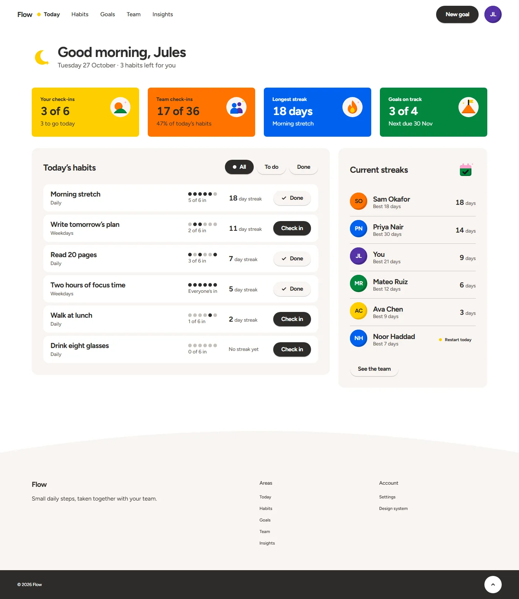

01Start a project
02Restyle a product
03Keep building
Startingaproject?
Beginwithitssystem.
NEW PROJECT
Thespec,kept
Tokens,components
Firstscreen
Set up before any screen exists. Every later session builds from it.
my-new-app
- src/
- package.json
- design-system/agent.md
- design-system/tokens.css
- design-system/components.md
- design-system/VERSION
- AGENTS.md
- CLAUDE.md
Aa Figtree
SaveStart freeCancel
● TodayWeekMonth
Check-ins17
Streak18
Goals3
“Set up the Pigment design system morning-shapes in this project.”
Alreadylive?
Moveitontoone.
YOUR SITE
Yoursite
MarginNotes
Inkleaf
GraphiteBlueprint
MorningShapes
Every feature, route and test kept. Each system applied by a coding agent, unedited.
kilnstreet.coffee

Weekslater,
anysessionfollowsit.
YOUR PRODUCT
Builtonthesystem
Asksforanewscreen
Stillonthesystem
Every session reads design-system/agent.md from your project. Built by a coding agent, unedited.
team-habits.app

“Add a screen to create a team goal.”
reads design-system/agent.md
Start,restyle,keepbuilding.
Onesystemyouragentfollows.
pigmentui.com